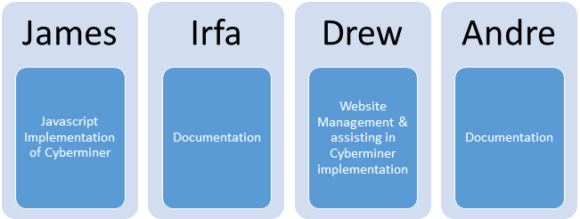

Cyberminer Software Architecture
Project Phase 2 - Interim
Team Website URL: http://se4352jida.github.io/
Team JIDA:
Andre Cordero � Team Leader
Irfa Mustafa
Drew Cannedy
James Lussier
CS 4352.0U1
Project Phase 2
Team organization:
|
Member�s Name |
Student ID |
|
Phone |
|
Drew Cannedy |
dxc142830 |
dxc142830@utdallas.edu |
940-781-4486 |
|
Andre Cordero |
aac150130 |
aac150130@utdallas.edu |
832-233-2106 |
|
James Lussier |
jxl126730 |
jxl126730@utdallas.edu |
214-577-9804 |
|
Irfa Mustafa |
ixm130530 |
ixm130530@utdallas.edu |
972-900-1422 |
Team leaders/deliverable:
|
Project Phase |
Due Date |
Leader |
|
Interim Project Phase I |
June 12 (Tuesday) |
Irfa Mustafa |
|
Interim Project Phase I Presentation |
June 12/14 (Tuesday/Thursday) |
Irfa Mustafa |
|
Final Project Phase I |
June 21 (Thursday) |
James Lussier |
|
Interim Project Phase II |
July 12 (Thursday) |
Andre Cordero |
|
Final Project Phase II |
July 24 (Tuesday) |
Drew Cannedy |
|
Final Project Phase II Presentation / Demo |
July 24/26 (Tuesday/Thursday) |
Drew Cannedy |
Team Contribution and Signature
|
Member�s Name |
Contribution Percentage |
Signature |
|
Drew Cannedy |
25% |
|
|
Andre Cordero |
25% |
|
|
James Lussier |
25% |
|
|
Irfa Mustafa |
25% |
|
Team Meetings:
Preliminary Plan (Phase 0): May 27, 2018 � May 29, 2018 � online / virtual meetings
- Participants = all members
- No face to face meeting
- Messaging on groupMe as needed
- Decided on team leaders for each phase
- Split up the work load for the preliminary plan
- Created website for the group � Drew
- Created Google doc for sharing files - James
- Description of tools used � James
- Brief description of the project � Andre
- Putting everything together into the preliminary plan � Irfa
Project Phase 1 Interim: June 7, 2018 � June 13, 2018 � online / virtual meetings
- Participants = all members
- No in person meeting this time either
- Messaged each other as necessary on groupMe
- Searched up references for the project � Irfa
- Assigned tasks to each member
o Drew - implementation of the KWIC system
o James � creating the user manual for the KWIC system
o Andre � Developing the Abstract Data Type Model and UML class diagram for the KWIC system
o Irfa � setting up the presentation slides and managing the documentations; listing the different types of requirements, problem statement, etc.
Project Phase 1 Final: June 14, 2018 � June 21, 2018 � online / virtual meetings
- Participants = all members
- No in person meeting this time either
- Messaged each other as necessary on groupMe
- Completed the unfinished tasks and made changes to the project
o Andre - created the trade-off analysis chart
o Irfa � added in the implicit invocation architecture
o James � changed implementation to Javascript
o Drew � updated the website as required with the new implementation and finished document
Project Phase 2 Interim: July 9, 2018 � July 12, 2018 � online / virtual meetings
- Participants = all members
- No actual face-to-face meeting this time again
- Messaged each other as required on groupMe
- Discussed and assigned out parts to everyone for phase II
o Andre � Functional and Non-functional requirements
o Irfa � Introduction and other parts of documentation
o James � implementation of Cyberminer in Javascript
o Drew � also assisted in the implementation of the Cyberminer system and updated the website
1.
Introduction
1.1 Project overview
In the previous phase of the project, the KWIC system was implemented. During this phase, the team members will develop the Cyberminer System that will make use of the KWIC Software System. The Cyberminer System is basically a web search engine that will allow users to see the URLs that may contain the words searched for. Once again, an Object-Oriented architectural style will be used in order to implement this software. While KWIC was initially built as a Java applet, the Cyberminer System will be written in JavaScript. Just like KWIC, the Cyberminer System will be made available on the team website. This phase will also utilize the agile method in order to develop the Cyberminer Sytem in two stages.
1.2 Project deliverables
Deliverable���������������������������������������������������������������������������� ����������� Due Date
����������� Interim Project Phase I���������������������������������������������������������� ����������� June 12
Interim Project Phase I Presentation ������������������������������������ ����������� June 12 / 14
Final Project Phase I ������������������������������������������������������������� ����������� June 21
Interim Project Phase II �������������������������������������������������������� ����������� July 12
Final Project Phase II ����������������������������������������������������������� ����������� July 24
Final Project Phase II Presentation / Demo �������������������������� ����������� July 24 / 26
1.3 Evolution of this document
This document will evolve throughout the entire project. Various document sections will be changed and/or added in as needed within the different stages of the project.
1.4 References
����������� Sample projects listed on the class website have been referenced along with the online template for this project. The professor�s lecture slide was also used for referencing the architectures.
1.5 Definitions, acronyms, and abbreviations
Cyberminer � web search engine that displays a list of URLs that contain the search
word(s)
KWIC � Key Word in Context: a method of indexing in which the sorting is done��
alphabetically
UML � Unified Modeling Language: standardized way of illustrating the system�s design
ADT � Abstract Data Type - a type of architecture model used for data types
2.
Project organization
2.1 Process model
����������� The software process model that will be used for this project is Agile Method. The project will be completed and changed as needed throughout various stages. The number of stages for this specific project is four. For phase II, there will be two stages for developing the Cyberminer Software System. �

2.2 Organizational structure

2.3 Project responsibilities
- All group members will take responsibility for completing the tasks assigned to them within the time frame provided.
- All team members will be responsible for letting the other members know if some issue comes up.
- All team members will reply to the messages within reasonable time.
- All team members will do their utmost to help out each other when someone needs assistance
3. Project Specifications
3.1 Problem Statement
�����������������������
|
The problem of |
Not having an effective indexed search engine system that will list out the relevant results of a search |
|
affects |
the users who need to search online sources for specific words |
|
the impact of which is |
slow access to irrelevant search results |
|
A successful solution will be |
The Cyberminer System that displays a list of the URLs that contain words searched for by the user. The Cyberminer System makes use of the KWIC Index System to maintain a list of URLs and their description. |
3.2 Functional Requirements
3.3 Non-Functional Requirements
�
�3.4 Traceability Matrix
|
NFR 1.0 |
NFR 2.0 |
NFR 3.0 |
NFR 4.0 |
NFR 5.0 |
NFR 6.0 |
|
|
FR 1.0 |
|
|
|
|
|
|
|
FR 2.0 |
|
|
|
|
|
|
|
FR 3.0 |
|
|
|
|
|
|
|
FR 4.0 |
|
|
|
|
|
|
|
FR 5.0 |
|
|
|
|
|
|
|
FR 6.0 |
|
|
|
|
|
|
4. Technical process
4.1 Methods, tools, and techniques
The tools that we will be using to construct our project include Github Pages, JavaScript, and Netbeans. Github Pages is a website design software that we are using due to our team member�s prior familiarity of this software. We will be using Github Pages to construct our website for this project. In order to create the search engine itself, we will be using the Java programming language in conjunction with the Netbeans Independent Development Environment. The reasoning beyond these choices is because most of our team members are more familiar with Java as opposed to other programming languages, and the same idea applies to the choice of Netbeans as compared to other programming environments. Furthermore, we are using the GroupMe application to facilitate the communication process between our team members. Lastly, Google Drive is being used in order to share files pertaining to the project.
�� 4.2 Software architecture design
Abstract Data Type Model � Cyberminer
����������� UML Class Diagram � Cyberminer
4.3 Project implementation and prototype
����������� Implementation on group website:
� (website URL)
� Requires internet access
� Implemented using Javascript
5. Work elements, schedule, and budget
��������� The deadline for this project is July 26, 2018. On this date, the final project will have to be submitted, and a demo will be given. In order to meet this deadline, parts of the project will be due in increments starting from June 12. The specifics of the timeline are listed below:
Interim Project Phase I���������������������������������������������������������� ����������� June 12
Interim Project Phase I Presentation ������������������������������������ ����������� June 12 / 14
Final Project Phase I ������������������������������������������������������������� ����������� June 21
Interim Project Phase II �������������������������������������������������������� ����������� July 12
Final Project Phase II ����������������������������������������������������������� ����������� July 24
Final Project Phase II Presentation / Demo �������������������������� ����������� July 24 / 26
6. Cyberminer � User Manual